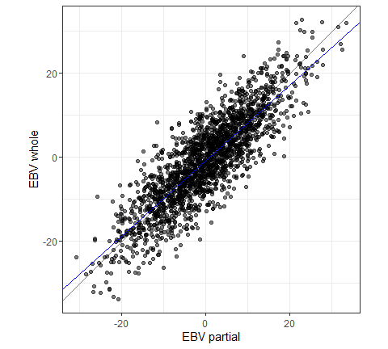

🚧 validatoR is currently in beta version and under active development. Functions, arguments and results can change between versions, so try it out, but do not build anything critical on it yet. Feedback and suggestions are very welcome, see Feedback.
validatoR is a standardized, open-source R package to validate (genomic) predictions in animal breeding. Give it the EBVs of a “partial” and a “whole” evaluation, or any predictions and a target to validate them with, and it will return the bias, the dispersion, the correlation and the accuracy, with bootstrap standard errors and a plot if you want them.
Why validatoR?
New genomic models, genotypes, omics data and traits all need large investments, and validation is how you show that they pay off. In practice, validation is often simplified or skipped: it takes time, it is easy to get wrong, and everyone does it a little differently, so results from different analyses can’t be compared and the benefit is hard to justify.
validatoR is a standardized, open-source package for this step. The formulas are implemented once and documented, the functions check their inputs (mismatched IDs, missing values, duplicates, impossible values) and stop with a clear message instead of returning a wrong number, and the results are tested against data with known answers. So you know how each statistic is computed, and you can compare results across different analyses, species and traits, and studies.
What do you want to do?
| You have | Use |
|---|---|
| EBVs on different bases that must be put on the same base before you compare or validate them | rebase_ebv() |
| An earlier (“partial”) and a later (“whole”) evaluation of the same animals, and you want the level bias, the dispersion bias, accuracy of the partial EBVs (the LR method), and ratio of accuracies | validate_lr() |
| The same two evaluations, and you want the LR statistics for each group of animals (cohort, herd, sex) in one call | validate_lr_by_group() |
| Predictions and a target to validate them with: pre-corrected phenotypes, true breeding values or other EBVs | validate_prediction() |
Installation
Install the development version from GitHub using pak. This is the main branch, the “development” badge above, which can be ahead of the latest release:
# install.packages("pak")
pak::pak("bonifazi/validatoR")or, with the remotes package, building the vignette as well:
# install.packages("remotes")
remotes::install_github("bonifazi/validatoR", build_vignettes = TRUE)Install a specific release, or without GitHub access
To install exactly one release, the “release” badge above, add its tag after the @. The tags are listed on the Releases page. The files on a release give the same version as its tag:
pak::pak("bonifazi/validatoR@v0.0.9-beta")You can also download a file from the Releases page and install it from disk. The source tarball (.tar.gz) works on Windows, Linux and macOS, and the binary (.zip) is a shortcut for Windows. Installing from a file does not install the packages validatoR depends on, so install them first:
install.packages("ggplot2")
# source tarball, any system
install.packages("validatoR_0.0.9.tar.gz", repos = NULL, type = "source")
# binary, Windows only
install.packages("validatoR_0.0.9.zip", repos = NULL, type = "win.binary")A first example
toy_validation ships together with the package. It has 2,000 simulated animals with the EBVs of a partial and a whole evaluation, built so that the statistics have known values (level bias = 0.75, dispersion bias = 0.90, rho = 0.85). validate_lr() takes one data frame per evaluation, with the animal IDs in the first column and the EBVs in the second.
library(validatoR)
# get the partial EBV
partial <- toy_validation[, c("id", "partial")]
# get the whole EBV
whole <- toy_validation[, c("id", "whole")]
res <- validate_lr(partial, whole, plot = TRUE)
res$stats # view the statistics
#> value
#> n 2000
#> level_bias 0.75
#> dispersion_bias 0.9
#> rho 0.85
#> inc_acc 1.176
res$plot # view the plot
No bias means a level bias of 0 and a dispersion bias of 1. In this example, the partial EBVs are over-dispersed, as simulated.
With plot = TRUE, the function also returns a scatter plot of the whole EBVs on the partial EBVs: the grey line has slope 1, and the blue line is the regression of the whole EBVs on the partial EBVs.
Learn more
The getting-started vignette walks you through each function step by step, with standard errors, plots and validation groups. You can view it by running:
vignette("getting-started", package = "validatoR")As for any R package, each function comes with its own help page with every argument explained: ?rebase_ebv, ?validate_lr and ?validate_prediction.
What changed between versions is listed in NEWS.md.
Feedback
Because the package is still changing, your feedback helps to shape it: what you would like to see implemented, how you would use it, and any problem you run into.
- To report a bug or request a feature, open an issue on the Issues page of the GitHub repository: click “New issue”, describe what you did and what you expected, and paste the error message, if there is one.
- To reach out directly, please email me (Renzo Bonifazi) at renzo.bonifazi@outlook.it.